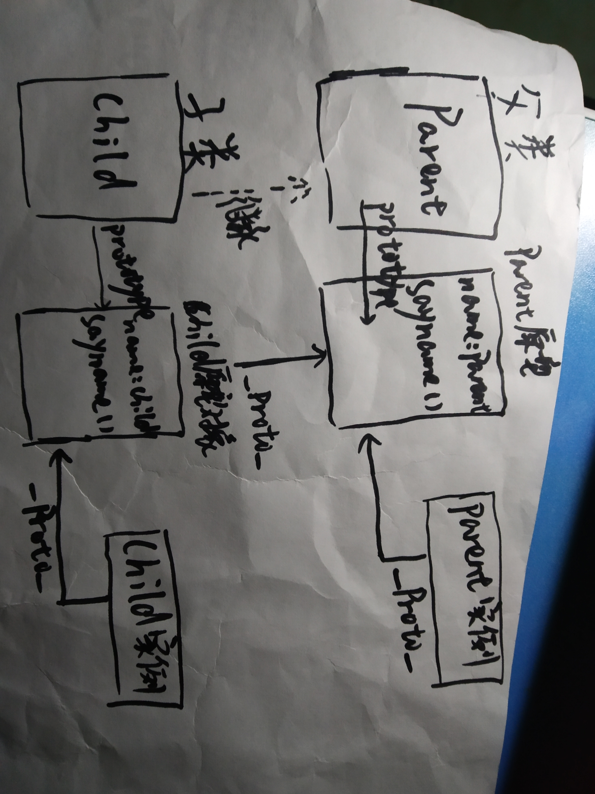

前置技能：
1. 分别使用es5和es6的语法创建一个类，名为'Parent',具有属性name='Parent' ,方法sayName = () => console.log(this.name)
代码见JS
2. 分别使用es5和es6的语法继承Parent类，名为'Child',具有属性 name="Child"，方法sayName = () => console.log(this.name)
代码见JS
3. 对Parent和Child实例化，并各自调用方法sayName，解释打印出的值是什么，为什么
答：
es5浏览器执行箭头函数输出全局name值，都为'Global',代码执行则都输出"undefined".
es6浏览器及代码执行结果分别是ParentES6和ChildES6。
解释：
箭头函数不绑定this,this表示当前执行环境对象.
其体内的this对象,是定义时所在的对象,非使用时所在对象,必须通过查找作用链域来决定它的值,
如果箭头函数被非箭头函数包含,那么this绑定的是最近一层非箭头函数的this,否则,this的值为undefined。
4. 说明new 运算符发生的过程，并自定义一个new 方法，具备和new一样的功能，形如：newClass(Parent)返回Parent的一个实例
答：
1)创建一个新对象;[const obj = {};]
2)将构造函数的作用域赋给新对象(因此this指向了这个新对象);
3)执行构造函数中的代码(为这个新对象添加属性);
4)返回新对象。
const newClass(Class,...arg){
const obj = {}
obj.__proto__ = Class.prototype//看到这个没
Class.call(obj,...arg)//这个其实就是执行构造函数，在这里面填上参数就行
return obj
}
5. 了解原型链，并说明[prototype]属性和[__proto__]属性，哪一个是实例的属性，哪一个是类的属性
答：
prototype是类的属性，表示类的原型对象。__proto__是实例的属性，实例只有__proto__属性。
6. 完成上述任务之后，画出2个类和对应的实例，以及[prototype]属性和[__proto__]属性直接的连接关系（图可以手画拍照上传）
